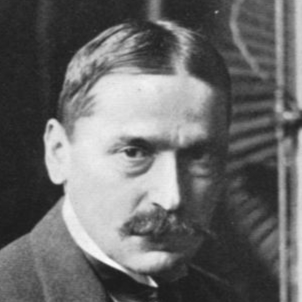

Mihajlo Pupin
Mnoge pronalazače i naučnike uništilo je to što su poverovali da su “nadljudi”
Mihajlo Pupin je tokom svog naučnog i eksperimentalnog rada dao značajne zaključke važne za polja višestruke telegrafije, bežične telegrafije b telefonije.